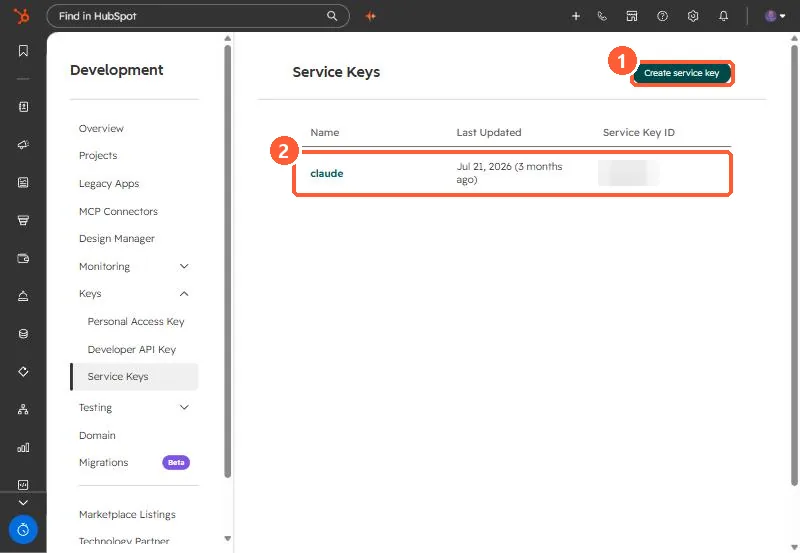

Short answer
Service Keys, under Settings > Integrations > Service Keys, are scoped API credentials for system-to-system integrations, BI tools, data warehouses and internal scripts. HubSpot's changelog says creating one needs Developer Tools access, a key can only get scopes the creating user already has, and Service Keys do not support webhooks. HubSpot positions them as the replacement for legacy private apps, whose creation is being turned off.
1. Where
Service Keys sit in the Development area under Keys, next to Personal Access Key and Developer API Key.


2. Rules
- Creating a key needs Developer Tools access.
- A key can only be given scopes the creator already has, and only the scopes you select.
- No webhooks. If you need webhooks, use a project-based app or keep a legacy private app.
- Name keys for their job, such as
powerbi-contacts-read, and grant the least scope.
3. Private apps
New legacy private apps are being switched off. See private apps moved to Legacy Apps for the dates.